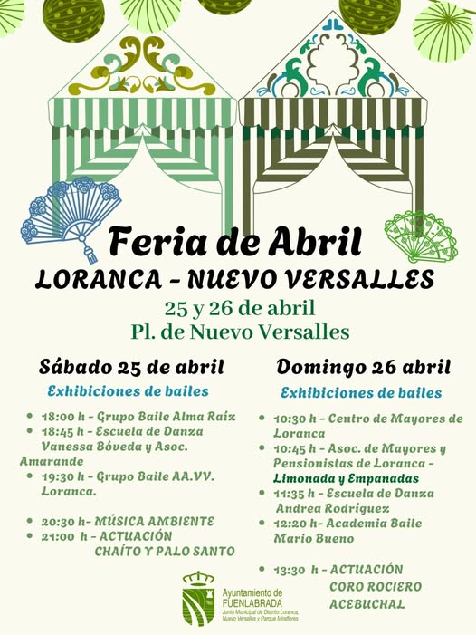

De repente, un repicar de castañuelas se cuela en el ir y venir habitual del centro. Uno podría decir que está en la capital andaluza, aunque no sea así, porque hay algo especial en el aire de Fuenlabrada. De la mano de la Casa Andaluza de la ciudad, Fuenlabrada se viste de flamenca; con el olor a claveles, la música y risas como banda sonora, es un día de celebración. Los pies de los bailaores resuenan por toda la plaza y dibujan un compás de cuatro tiempos que se mezcla con el rasgueo de las guitarras. Aquí, en la Plaza de España de Fuenlabrada, el cielo se ha vestido con una trama de farolillos de todos los colores.

Durante el resto del año, uno está acostumbrado a ver este sitio como un mero punto de trámites, de ir y venir. Pero este fin de semana (los días 17, 18 y 19 de abril), la cosa cambió radicalmente: se convirtió en un recinto ferial de pura cepa. Se nota que la ciudad se ha esmerado en traer ese aire del Guadalquivir hasta el mismísimo sur de Madrid.
«Queremos, precisamente, que el alma de la feria sevillana se cuele por aquí, que todos los vecinos puedan gozarla a tope, compartiendo su música y sus bailes», nos contaba Cristina Mora, la concejala de Cultura. Lo decía, además, con la plaza a rebosar, con casi diez mil personas escuchándola.

El sábado, justo al mediodía, el sol brillaba sobre el instante más puro y bonito que nos ha dejado esta feria. No subieron al escenario profesionales de fuera; al contrario, fueron los alumnos de las escuelas fuenlabreñas, como las de Mario Bueno y Noemí Alcázar, quienes se hicieron con él. Vimos a niñas de apenas cinco años, concentradísimas en no perder ni un paso de su segunda sevillana, bailar junto a adolescentes que, sin duda, dejaban claro que la tradición andaluza tiene un relevo generacional asegurado aquí en Fuenlabrada. Aquella tarde fue una auténtica muestra de "orgullo fuenlabreño", y de que, aunque la feria es andaluza, la disfrutamos entre todos.

Con la tarde ya cayendo, la feria cambió totalmente para recibir a sus platos fuertes. Es verdad que la apertura del viernes con Manguara dejó sensaciones encontradas entre los más críticos esos que siempre buscan un puntito más en la programación artística, pero el ambiente del sábado por la noche era de pura electricidad. Con los grupos principales ya encima del escenario y la plaza abarrotada, Fuenlabrada era como una enorme caseta de feria abierta a todo el mundo.

"Llevo treinta años viviendo en Fuenla, pero cuando escucho un coro rociero en mi plaza, de repente, siento que estoy en mi pueblo de Jaén", me contaba, con la emoción a flor de piel, Carmen, una de esas vecinas que no soltaba su abanico ni por un segundo. Y no es la única, como a ella, a muchísimos fuenlabreños este encuentro, además de gratuito, les ha servido para conectar un poco con lo suyo, con su historia familiar.
FUENLABRADA SEVILLANA PARTE 2: LORANCA

Si, apenas una semana, la energía de la feria se apropio de la Plaza de España, el fin de semana del 25 y 26 de abril, el testigo de esa pasión lo ha cogido el Distrito de Loranca, Nuevo Versalles y Parque Miraflores. La fiesta no para, el bailoteo sigue, llenando el barrio de volantes, lunares y el eco de los tacones. La Plaza de la Junta Municipal de Distrito, se ha transformado en el nuevo epicentro de una celebración que, superó todas las expectativas convocando a más de 200 bailarines y bailarinas. Las vecinas con flores en los pelos, y lo hombres bailando las sevillanas, con su arte y su entusiasmo, se han encargado de inundar de un color y una alegría especial la rutina y la vida de los habitantes del distrito.

El sábado amaneció con una explosión de energía que llegó directamente desde las exhibiciones locales. Ha sido un despliegue de talento puro, donde grupos tan arraigados como Almaraíz, la prestigiosa Escuela de danza Vanesa Bóveda y la incansable Asociación Amarande, nos han regalado una demostración magistral de la técnica depurada y el esfuerzo constante de solo meses y meses de ensayos. De la misma forma, la Asociación de Vecinos de Loranca, por su parte, ha añadido ese toque tan necesario de cercanía y familiaridad. Pero el verdadero clímax, ha llegado cuando la noche ya se ha hecho paso: la esperadísima actuación de Chaíto y Palo Santo. Este dúo no solo ha cumplido las expectativas, sino que ha elevado el nivel artístico de la feria. Ha sido un broche de oro que ha marcado el final de la primera jornada de las fiestas.

La mañana del domingo ha dado un protagonismo muy especial a quienes atesoran la sabiduría que solo la experiencia puede dar. Con una plaza que, poco a poco, se ha ido llenando hasta rebosar, los miembros del Centro de Mayores de Loranca y la activa Asociación de Mayores y Pensionistas han tomado las riendas de la segunda jornada. Lo que hemos presenciado ha sido un verdadero derroche de arte y mucha gracia, y, han demostrado que la edad no es un límite para el disfrute. El ambiente, que ya de por sí era festivo, se sintió aún más arropado con la presencia de la concejala de Mayores, Ana María Pérez Santiago, y el concejal de distrito, Raúl Jubín. Juntos, han creado el escenario idóneo para que las actuaciones de las escuelas de Andrea Rodríguez y la Academia Mario Bueno brillaran con luz propia, mostrando la prometedora cantera de talento que hay aquí en Fuenlabrada.
Entre risas y amigos, las fiestas llegan a su fin, pero no sin antes disfrutar con emoción de la fantástica actuación del Coro Rociero Acebuchal. Este coro, con una trayectoria que habla por sí misma en la difusión de la cultura y el espíritu andaluz, no solo ha logrado mantener viva una herencia, sino que la enriquece y la comparte con una pasión inquebrantable.

Su actuación fue, sin lugar a dudas, el "broche final" de esa devoción tan particular que se lleva en el alma, contagiando a todos los presentes con su alegría y su arte. Desde la organización, que ha trabajado incansablemente para que todo esto fuera posible, han querido extender un profundo agradecimiento. "Queremos dar las gracias, de corazón, a todas las entidades, a nuestros mayores que son un ejemplo, y a todas las escuelas por su inmensa implicación". Celebraban así, con justa razón, el rotundo éxito de una convocatoria que ha vuelto a confirmar, una vez más, que en la querida Fuenlabrada, construir comunidad, crear esa red que nos une, es un sinónimo indiscutible de bailar juntos, de compartir, de sentir la vida a un mismo compás.